Reconcile cash.
Settled receipts against the recorded value. Deposits, plans and missing amounts stay labelled. No payment-plan language goes into an ad before this.
Internal working plan. 7 November 2026. Not for the client until Isaac and Sammy clear it. Photographs are from inbeducation.com.au. Charts are dated captures, not a new forecast.
Working plan · Growth Labs, in In Balance’s own pages
The first month establishes the baseline and tests one meaningful improvement. Paid acquisition, the first conversation, collected cash and the room all have to be visible before spend goes up.
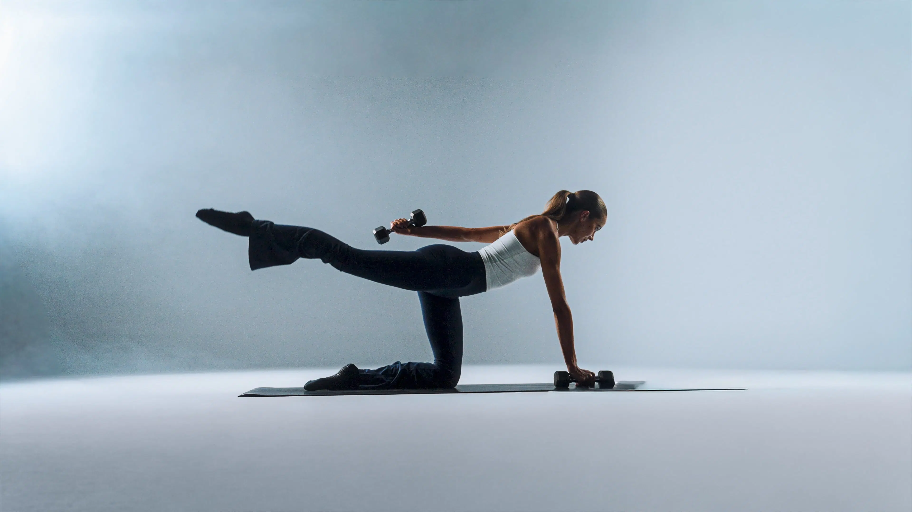
July to 26 October 2026: 126 enrolment records and about A$291,000 of recorded value. Media was about A$66,000. A revenue-value return of about 4.4 times media is not profit, and it is not settled cash. Ninety-nine of the 126 records had an amount. Deposits and plan amounts are mixed in.
Online was 18 of those 126. Meta spend with “online” in the campaign name was about A$6,578. In-person names were about A$56,116. The offer exists. The books cannot yet say which problem paid for it.
Where the teaching happens
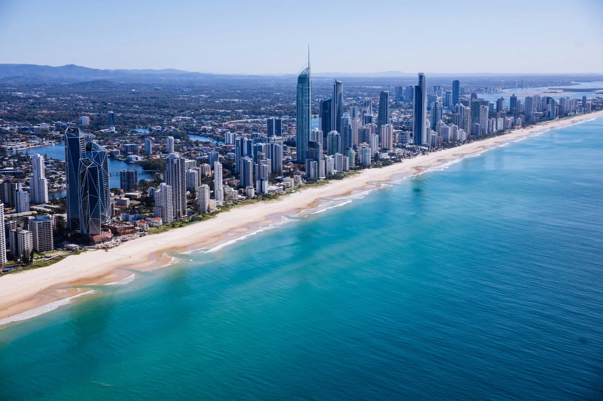
The first 30 days
Settled receipts against the recorded value. Deposits, plans and missing amounts stay labelled. No payment-plan language goes into an ad before this.
Which of the four problems the lead actually had: career change, already curious, already teaching, or a business. The 1,267 first-seen leads are not yet split.
Only if tracking, the payment link and Sammy’s week can hold it. Current intake button against a guide or a booked conversation. Same offer. Judge a qualified conversation and cash.
The student journey, and a promise-versus-delivery gap. Completion, first class taught, and a second payment are different facts. Collect them.
What the ads actually do
The career-change colleges buy traffic for a free guide, a conversation, or a A$100 start. These are In Balance’s own captured ads. The button is Sign up or Learn more, onto an intake. Meta’s library does not show whether they paid back.
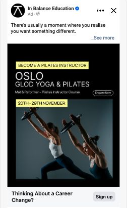
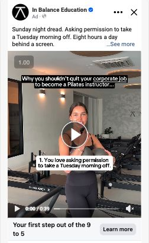
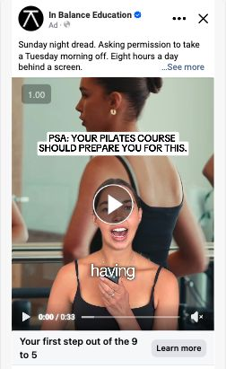
July–August matched email: 22 first payments inside 30 days, from 971 leads, 2.27%. That is the baseline a clearer next step has to beat, on cash. The account reported 383 conversions and zero campaign leads. The full comparison is in Players.
The model already in the dashboard
Ten percent monthly spend growth and a one percent monthly improvement in cost per acquisition are the lines on the chart. They are not an agreed budget. First receipts are not recognised revenue. Other cash costs and the opening bank balance were blank.
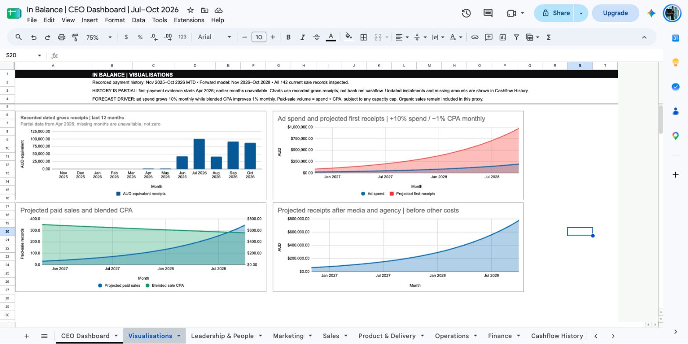
The path a student actually takes
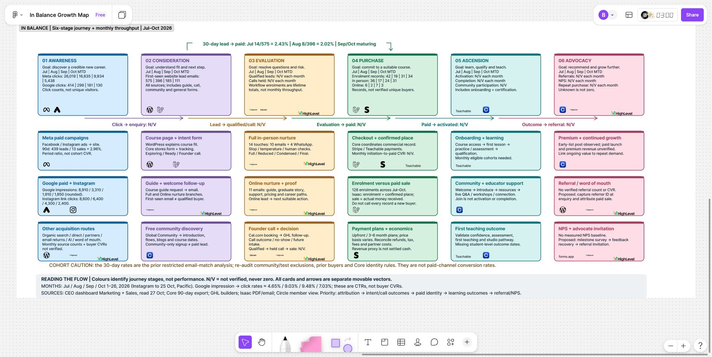
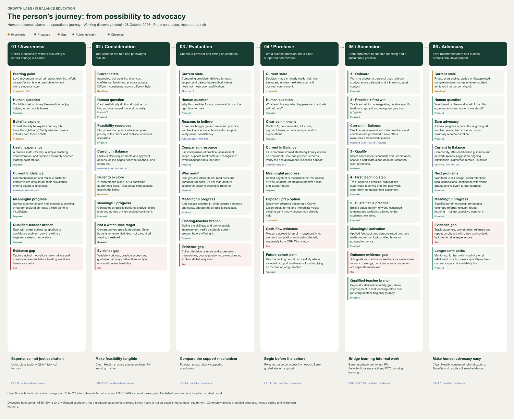
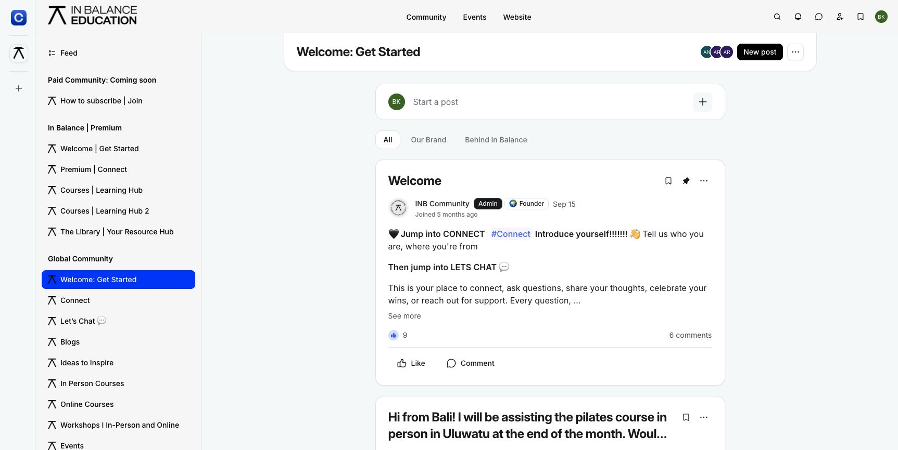
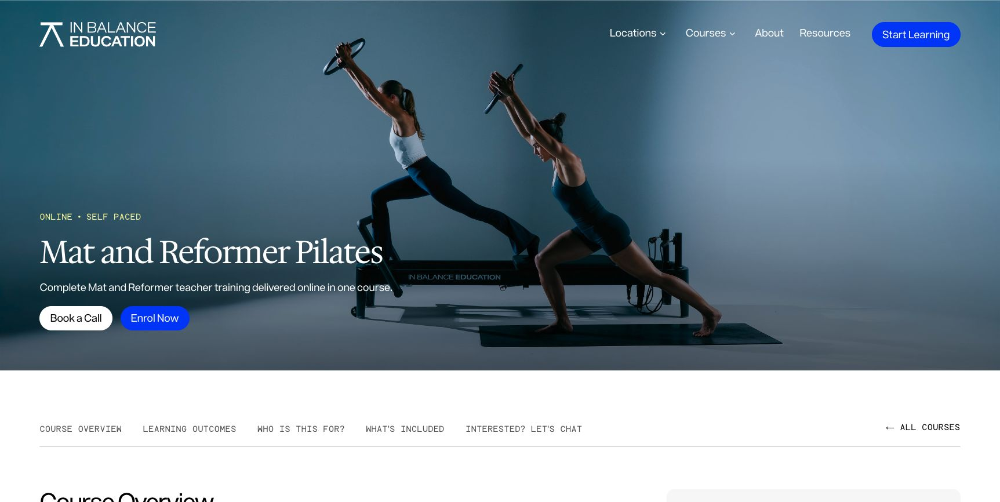
What the public channels were doing
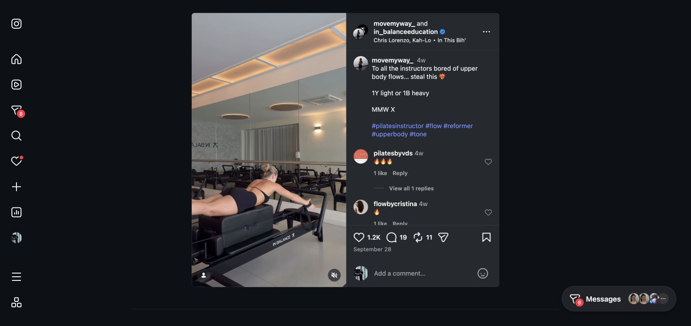
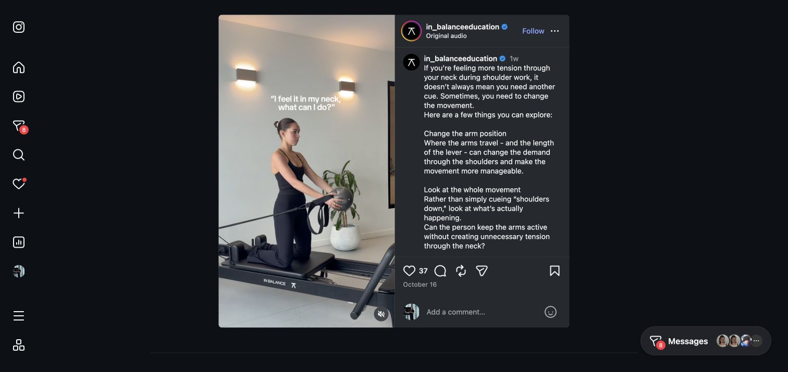
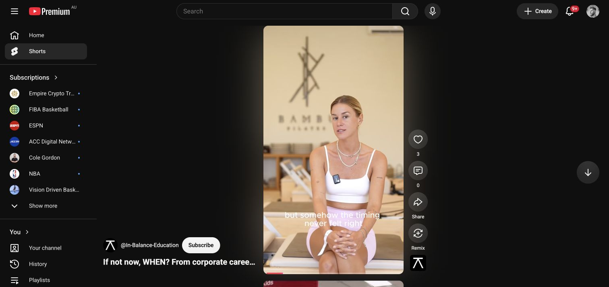
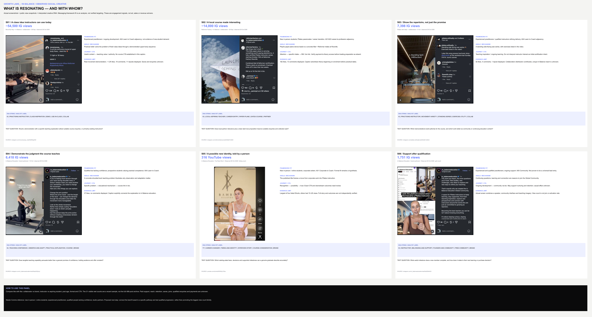
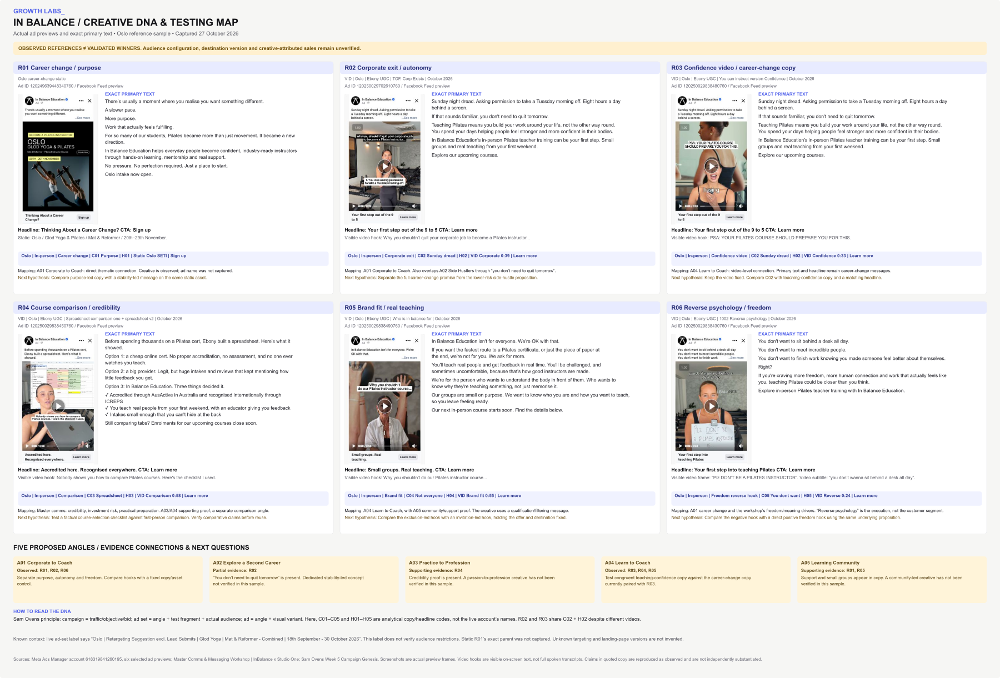
A reference, not a result
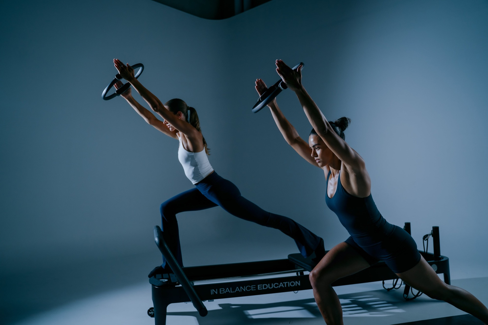
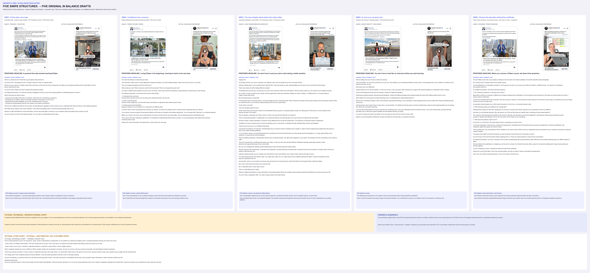
The next decision
Scale only when tracking, cash and contribution, capacity, and an agreed spend limit support it. Stop a test when delivery, tracking, budget or Sammy’s week fails. Leave Certificate IV, an income line, a tripwire, a new country, and a mandatory Circle join out of this month.